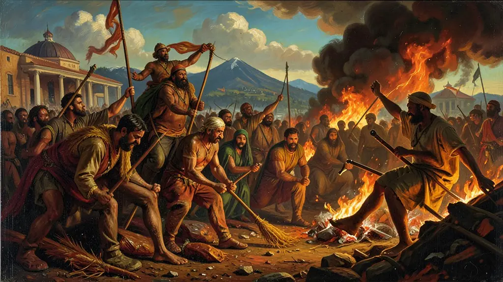
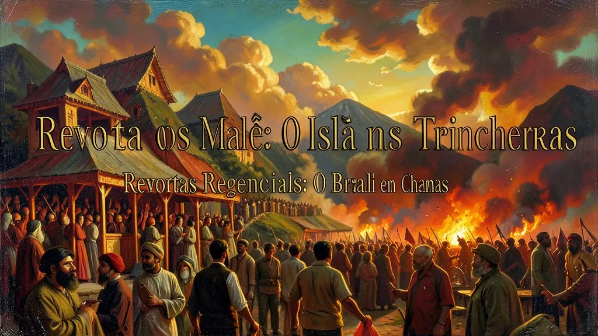
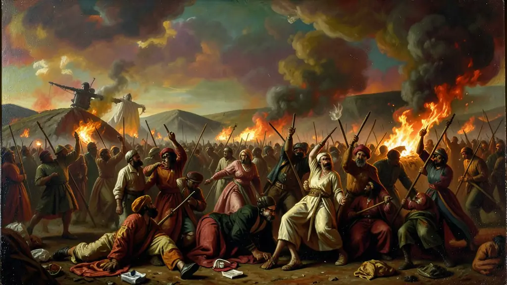

Capítulo 01
1. Cabanagem: O Grito dos Humilhados no Pará
Pobres que viviam em cabanas às margens dos rios cansaram-se da fome e do desprezo dos governantes do Rio de Janeiro. Eles tomaram o poder em Belém por anos, mas a falta de um plano político claro entre as lideranças facilitou a retomada violenta pelo Império. Foi a revolta mais sangrenta da nossa história: vilas inteiras foram apagadas do mapa pelas tropas imperiais como exemplo de terror.

Capítulo 02
2. Revolta dos Malês: O Islã nas Trincheiras
Em Salvador, escravizados de etnia Nagô e Haussá, que sabiam ler e escrever em árabe, organizaram um levante para tomar a cidade e acabar com a escravidão. Diferente de outros levantes, este tinha uma base intelectual e religiosa (o Islã). Descobertos dias antes, foram duramente reprimidos. O medo de uma revolução negra organizada assombrou as elites brasileiras por décadas.

Capítulo 03
3. Sabinada: A Classe Média Republicana
Liderada pelo médico Francisco Sabino, a revolta em Salvador não queria separar-se do Brasil para sempre, mas apenas até o 'Pedrinho' (D. Pedro II) crescer. Eles eram contra a nomeação de governadores de fora da Bahia. Foi um movimento urbano de intelectuais e militares que acabou em fuzilamentos no Campo da Pólvora em Salvador.

Capítulo 04
4. Balaiada: O Levante dos Fabricantes de Cestos
No Maranhão, a produção de algodão faliu e os pequenos artesãos e camponeses rebelaram-se contra os abusos dos grandes poderosos rurais (os Bentivi). O líder era Manuel Francisco dos Anjos Ferreira, o 'Balaio'. O movimento foi derrotado pelas tropas de Luís Alves de Lima e Silva, que graças a essa vitória ganhou o título de Barão de Caxias.
Capítulo 05
5. O Golpe da Maioridade: A Ordem Restaurada
As elites liberais e conservadoras perceberam que, se não houvesse um símbolo de autoridade central (o Rei), o Brasil viraria um 'caos de repúblicas'. Elas uniram-se para declarar D. Pedro II maior de idade antes do tempo. O Imperador adolescente foi o cimento que colou novamente as províncias que queriam fugir, iniciando os 49 anos de estabilidade do Segundo Reinado.
O Período Regencial (1831-1840) foi marcado pela 'experiência republicana' sob a vestimenta da Monarquia. Com a abdicação de D. Pedro I, as tensões centralidade-autonomia tornaram-se o fulcro da política brasileira. Segundo Boris Fausto, as revoltas regenciais, de Cabanagem a Sabinada, expuseram o déficit de integração territorial e de cidadania. Não foram meros levantes 'criminosos', como muitas vezes a narrativa oficial pretendeu, mas autênticas irrupções sociais motivadas pela pauperização e abandono das províncias.
Estas rebeliões possuíam características fundamentalmente distintas quanto às suas bases demográficas e finalidades programáticas. A Cabanagem no Pará e a Balaiada no Maranhão tiveram forte coloratura popular — mestiços, indígenas e escravizados fugidos — marcadas por uma profunda insatisfação antilusitana e de sobrevivência básica. Já a Sabinada, com seus republicanos soteropolitanos, demonstrava um perfil de estamento médio e proprietário frustrado com o poder centralizador instalado no Rio de Janeiro pós-Ato Adicional.
O Enem costuma abordar as revoltas regenciais sob a perspectiva de que a Unidade Nacional Brasileira foi construída a ferro, fogo e negociação. A posterior 'Regresso Conservador', a coroação antecipada do imperador menino (Golpe da Maioridade) e o peso da manutenção da máquina escravista operaram convergindo as elites regionais (as próprias oligarquias) num projeto monárquico que prometia 'ordem' num país temeroso da desintegração e da perda do controle sobre seus subalternizados.
Fonte: FAUSTO, Boris. História do Brasil. São Paulo: Edusp, 2012.
Atividades interativas
Questões para fixar
A Revolta dos Malês, ocorrida em Salvador em 1835, diferenciou-se de outras revoltas negras do período por um elemento cultural específico. Qual era?
As revoltas regenciais como a Cabanagem e a Balaiada foram caracterizadas por uma violenta repressão estatal. Qual era o grande temor das elites brasileiras em relação a esses movimentos populares?
Qual foi o principal motivo que levou as elites a darem o 'Golpe da Maioridade' em 1840, coroando D. Pedro II aos 14 anos?
Qual foi o movimento que reuniu camponeses e artesãos frustrados com os desmandos dos grandes fazendeiros e governadores no Maranhão?
Qual foi o movimento liderado pela classe média urbana que queria uma república temporária até a maioridade do imperador?